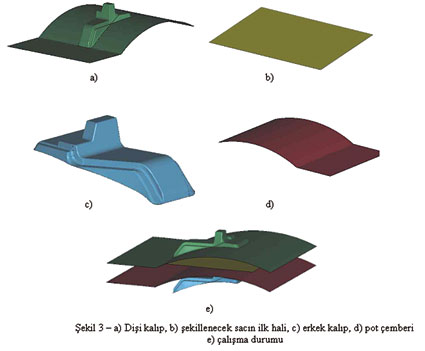
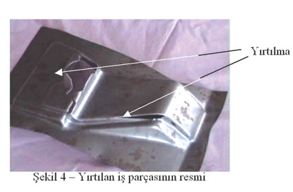

7. Derin Çekme Ýle Soðuk Þekillendirme Ýþleminin Sonlu
Elemanlar Yöntemiyle Ýncelenmesi
Geometrik
modellerin (üç boyutlu geometriler) oluþturulmasý CATIA V4.2.1
programýnda gerçekleþtirilmiþtir. Kalýp elemanlarý dahil tüm
sistem yüzey olarak modellenmiþtir. Parçalar sisteme yerleþtirilirken
et kalýnlýklarýnýn deðeri ve doðrultusuna dikkat edilmiþtir.
Parçalar arasýnda olmasý gereken en az boþluk býrakýlmýþ,
böylece iþlem süresinin gereksiz uzamasý engellenmiþtir.
Kalýp sistemi sýrasýyla yukardan aþaðýya; diþi kalýp, saç,
pot çemberi ve erkek kalýptan oluþmaktadýr. Kalýpçýlýkta birçok
hareketlendirme uygulamasý söz konusudur. Çalýþma içeriðinde
uygulanan yöntemde; diþi sabit kalýrken, pot çemberi, sacý
diþi ile kendi arasýnda sýkýþtýrýrken, erkek sonradan pot
çemberinin içinden geçerek parçayý þekillendirmektedir.
Sistemin að yapýsýnýn (Mesh) oluþturulmasý CATIA V4.2.1 yazýlýmýnýn
FEM Modeller modülünde yapýlmýþtýr. Ýncelenen sistemler yaklaþýk
60000 ila 100000 elemandan oluþacak þekilde að yapýsýna dönüþtürülmüþtür.
Bu elemanlardan, hesaplamada asýl görev yapan iþ parçasý (þekillendirilecek
sac) 20000 ila 65000 eleman olarak oluþturulmuþtur. Oluþan
mesh hatalarý CATIA V4.2.1 yazýlýmýnýn FEM Modeller modülünde
düzeltilmiþtir.
Að oluþumunda; parça boyutlarýna, geometrideki keskin köþelerin
yerleri ve daðýlýmlarýna, en küçük kývrým yarýçapýna, iþlemlerin
yapýlacaðý bilgisayarýn kapasitesine (Bellek, CPU, Disk) ve
oluþturulacak elemanlarýn dörtgen olmasýna dikkat edilmiþtir.
Að yapý Shell63 (orta düðüm noktasý içermeyen 4 düðüm noktalý)
elemanýyla oluþturulmuþtur. Bu eleman ekspilisit analizlere
uygun deðildir. Oluþturulan mesh bir ASCII dosyasý olarak
CATIA V4.2.1 yazýlýmýnýn ANSYS interface modülü yardýmýyla
elde edilmiþtir. Daha sonra ASCII dosyasýnýn içinde eleman
taným satýrý deðiþtirilerek Shell63 eleman Shel181'e dönüþtürülmüþtür.
Çözümler ANSYS/LS-DYNA'da, çözümlerin görüntülenmesi ve deðerlendirilmesi
LSPOST programýnda yapýlmýþtýr.
Bu çalýþmada iki farklý parça için birçok deðiþik analiz gerçekleþtirilmiþtir.
Bunlardan ilki (baðlantý braketi) modellemenin güvenilirliðini
sýnamak amaçlý incelenmiþtir. Ýkinci parça (taþýyýcý süspansiyon
traversi) ideal kalýp tasarýmýnýn elde edilmesi amaçlý bir
pilot çalýþma olarak incelenmiþtir.
7.1. Bir Baðlantý Braketinin Analizi
Analizi
gerçekleþtirilen baðlantý braketi kalýp sistemi Þekil 3'de
gösterilmiþtir. Bir hafif ticari aracýn torpido baðlantý karkasýnda
kullanýlan bu parça uygulamada; þekilde belirtilen kalýp sisteminde
düzgün imal edilememiþtir. Parçada deðiþiklik yapýlma yoluna
gidilmiþtir.
Sistemin
sonlu elemanlar analizinden elde edilecek sonuçlar, deneysel
parçanýn yýrtýlma þekli ile karþýlaþtýrýlarak yöntemin tutarlýlýðý
test edilecektir.
Uygulamada
sistemin çalýþmasý; sac, pot çemberinin üzerine yatýrýlýr,
diþi kalýp sabit sayýlabilecek bir hýzla aþaðý doðru inerek,
sacý pot çemberi ile kendi arasýnda sýkýþtýrýr (Þekil 3c).
Kalýp sistemi saca gelecek tutma kuvvetini þekillendirme esnasýnda
sabit tutacak þekilde tasarlanmýþtýr. Diþi kalýp (Þekil 3a),
pot çemberi (Þekil 3d) ile karþýlaþmasýna raðmen sabit hýzla
inmeye devam etmektedir. Deney aþamasýnda pot çemberinin altýndaki
yaylar ezilerek sabit sýkýþtýrma kuvvetini saðlamaktadýr.
Sac, pot çemberi ile diþi kalýp arasýnda sýkýþmýþ bir þekilde,
ilerlerken aþaðýda sabit olarak bekleyen erkek kalýba doðru
çarpar ve erkek kalýp (Þekil 3c) sacý gererek diþi kalýbýn
içine sývar. Bu þekillendirme yöntemi otomotiv sektöründe
iç panellerin imalatýnda en sýk kullanýlan yöntemdir.
Sonlu
elemanlar analizinde sistemin simülasyonunda hareketler; saca
göre diðer parçalarýn hareketleri ayný kalacak þekilde bazý
kabullere dayanarak basitleþtirilmiþtir. Gerçek uygulamada
olduðu gibi diþi kalýp aþaðý inerek sacý pot çemberi ile sýkýþtýrýr.
Ardýndan, sonlu elemanlar simülasyonunda gerçek uygulamadan
farklý olarak erkek kalýp yukarý doðru ilerleyerek sacý þekillendirmektedir.
Bu sayede sistemin çözüm süresi kýsalýr, modelleme ve veri
girme iþlemlerinde de kolaylýk saðlanmýþ olmaktadýr.
Birçok farklý yazýlýmda veya ayný yazýlýmda benzer yöntemler
kullanýlabileceði gibi farklý kalýp hareketleri de uygulanabilir.
Bu çalýþma içeriðinde kullanýlan metot tamamen yazarýn kendi
oluþturduðu bir yaklaþýmdýr, simülasyonun gerçekçiliði ilerleyen
bölümlerde açýklanacak deney ile ispatlanmýþtýr.
7.1.1. Kalýp Sisteminin Elemanlarý
Braketin
analizinde kullanýlan kalýp elemanlarý Þekil 3'de verilmiþtir.
Pot
çemberinin ortasýnda erkek kalýbýn geçebilmesi için bir boþaltma
yapýlmamýþtýr (Þekil 3c,d). Pot çemberi ile erkek kalýp arasýnda
temas tanýmlanmasý yapýlmamýþ olduðundan kalýp sisteminin
çalýþmasý esnasýnda erkek kalýp, pot çemberi içinden hiçbir
problem oluþmadan geçebilmektedir. Bu sayede pot çemberinin
mesh kalitesi yükselmiþ ve modelleme süresi kýsalmýþtýr.

Diþi
kalýp, pot çemberi ve erkek kalýp mesh iþleminde çok detaylý
að yapýsý oluþturulmuþtur. Çünkü bu parçalar gerilme ve þekil
deðiþtirme hesaplarýna katýlmayan rijit malzemelerden tanýmlanmýþtýr.
Bu parçalar çözüm süresini uzatmazlar. Þekillenecek parçanýn
ilk hali (Þekil 3b) olarak kullanýlacak að yapýsý mümkün olan
en az elemanla geometrinin son halini en iyi þekilde ifade
edebilecek þekilde yapýlmýþ ve en tutarlý sonucu elde edebilmek
için en çok hesap noktasý içeren eleman tipi ile mesh iþlemi
gerçekleþtirilmiþtir. Bu parçanýn eleman boyutlarý, sayýsý
ve eleman tipi çözüm süresinin belirlenmesinde önemli rol
oynamaktadýr.
7.1.2. Derin Çekme Deneyi
Torpido
baðlantý braketi parçasý klasik kalýpçýlýk yöntemleri kullanýlarak
tasarlanmýþ, kalýp sisteminde preslenmiþ ve sonuçta yýrtýlmalar
tespit edilmiþtir. Kullanýlan kalýp sistemi tek etkili kalýp
sistemidir. Tek tesirli veya tek etkili diye adlandýrýlan
kalýp sisteminde saca, þekillendirme hareketi erkek kalýp
tarafýndan verilir.
Uygulama BMC firmasýnýn gövde üretim atölyelerinde gerçekleþtirilmiþtir.
18 ton kapasiteli bir hidrolik pres kullanýlmýþtýr. Saçta
yýrtýlma gözlendikten sonra bir sonraki uygulamada kalýp ve
sac yüzeylerine sürtünmeyi azaltmak amacýyla yað sürülmüþtür.
Fakat bu uygulamanýn yýrtýlmaya engel olmadýðý gözlenmiþtir.
Kalýp sisteminin hareket süreleri deðiþtirilerek bir dizi
imalat denemesi daha yapýlmýþ fakat yine sonuç alýnamamýþtýr
(Þekil 4).
Parça
geometrisi, yeniden incelendiðinde, bu iþlemin "100 mm"'ye
yakýn çekme derinliðini çok az bir sac yüzeyinden ve oldukça
dik bir açýda oluþturmaya çalýþtýðý tespit edilmiþtir.
Tasarým
deðiþikliði, çekme derinliðinin azaltýlmasý ve yýrtýlan bölgedeki
kalýp çýkma açýsýnýn miktarýnýn artýrýlmasý þeklinde yapýlmýþtýr.
Yapýlan deðiþiklik sonrasý parça imalatý hatasýz bir þekilde
gerçekleþtirilebilmiþtir.

Parça
içerdiði yýrtýlmalar, ekspilisit sonlu elemanlar yönteminin
sýnanabileceði iyi bir örnek oluþturmaktadýr. Bu yüzden hatalý
parçanýn imal edildiði kalýplar incelenerek, ekspilisit analiz
için gerekli zaman, yer deðiþtirme ve kalýp açýklýðý verileri
kalýp sistemi üzerinden alýnmýþtýr. Ayrýca kalýp elemanlarýnýn
üç boyutlu geometrik modelleri de hazýrlanmýþtýr.
|